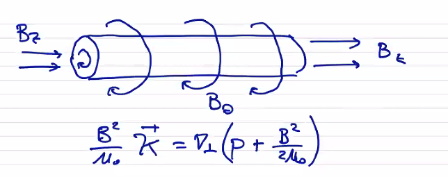
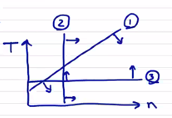

Applying approximations to the two-fluid plasma model will allow us to arrive at a single-fluid (center-of-mass) description. The result is the ideal magnetohydrodynamic model (MHD).
current density:j=qinivi−eneve→ve=eneqinivi−j/ene
total pressure:p=pi+pe=neTe+niTi
total temperature:T=(ni+ne)/2niTi+neTe
Now let's begin applying asymptotic approximations. For the mass density, applying the first approx (charge neutrality) we have
ρ≈n(mi+me)
Using approx 2 (vanishing electron mass)
ρ≈nmi
where
n=nine=Zn
The center-of-mass velocity (charge neutrality) gives
v≈mi+Zmemivi+meZve
with small electron mass approximation:
v≈vi
The current density is (charge neutrality approx)
j≈Zen(vi−ve)ve=vi−j/Zen
The pressure and total temperature are (with charge neutrality)
P≈n(Ti+ZTe)
T≈(1+Z)/2Ti+ZTe
MHD Momentum Equation
Now we combine the two-fluid equations with these asymptotic approximations to obtain the governing equations for the MHD variables. Multiplying the ion continuity equation by the ion mass gives
The energy equation is found by adding the ion and electron energies, but first we need to manipulate them into a common form. The ion energy equation is
Obviously, we've retained a number of terms that are specific to the behavior of the electrons. It is possible to incorporate the electron behavior by using a single-fluid MHD model with two temperatures Ti=Te. One can imagine a hierarchy of models, in which the most simplified is the single-fluid MHD model in which you evolve ρ, v, and T. Moving up a level, you have a MHD model with two temperatures in which you evolve ρ, v, Ti, and Te. Upwards from there you move back into the realm of multi-fluid models.
Now to relate the fields back to source terms. The low-frequency Maxwell's equations are
∂t∂B=−∇×E
j=μ01∇×B
∇⋅B=∇⋅E=0
Like in the multi-fluid plasma model, we still need to close the system by expressing some of our variables using equations of state (h, Π).
To simplify further, we can make some assumptions about heat flow
isothermal→p∝nT=const.γ=1
adiabatic→p∝nγ
cols plasma / force-free→p=const.γ=0
Ideal MHD Model
The extended MHD equations are simpler than the two-fluid model, but they can still be quite complicated. We can often still get useful analysis from further reductions. The ideal MHD model is such a reduction that we can get by dropping (with justification) several terms from the extended model. We justify the simplifications by comparing the magnitude of the neglected terms to the terms that are retained.
Recall the characteristic speed is vT,i. If we say that the characteristic length plasma length is L, then we can define characteristic time τ=L/vT,i.
The derivation of the two-fluid plasma model assumed a Maxwellian velocity distribution. We need the velocity distribution to thermalize, reach local thermodynamic equilibrium, and become Maxwellian. This means that we need many collisions, in fact so many collisions occurring frequently enough that we can ignore collisional effects. There must then be many collisions during the characteristic time τ.
For ions to be thermalized,
ττii≪1
And similarly for electrons
ττe≪1
The continuity equation remains unchanged from the extended MHD model
If we assume that the ions and electrons are in thermal equilibriumTi=Te, we can relate the collision times
τee:τii:τei=1:(memi)1/2:memi
The collision times are specifically collisional relaxation times of the Boltzmann equation
∂t∂f∣∣∣∣∣coll=ταβf−fMaxwellian
For electrons, the thermalization condition is much stricter for the ions
ττee=(mime)1/2ττii≪1
Neglect the anisotropic pressure tensor in the momentum and generalized Ohm's law, ∇⋅Π. Π is primarily the shear stress tensor. The ion thermal speed gives us a characteristic velocity for the plasma, so we use it to characterize the shear stress
Πi,max∼2μ(∂x∂u−31∇⋅v)∼μLvT,i
Standard treatments of the viscosity (Braginskii, etc.) show that viscosity scales with the number density, temperature, and collision time
μ∼nTiτii∼piτii
Πi,max∼piLτiivT,i
The specific term we want to get rid of is ∇⋅Π, so let's compare it to a term we want to keep ∇P
∇p∇⋅Π∼pi/LpiτiivT,i/L2∼ττii
So, to neglect the anisotropic pressure term in the momentum equation, once again we require
ττii≪1
In other words, as long as the plasma is collision-dominated, we can drop the ion anisotropic pressure term. What about associated the electron term? If you can assume Ti≈Te. Then pi≈pe for a neutral plasma, and
∇p∇⋅Πe∼pi/LpiτeevT,i/L2∼ττee≪1
Magnetic terms
In the generalized Ohm's law, the diamagnetic drift term is
Zen∇pe∼ZennTe/L∼ZeTi/L∼LZemivT,i2
Compare ∇pe/Zen to a term that we're going to keep, which is the dynamo term v×B
So to neglect the diamagnetic drift term, we need the plasma to be well-magnetized. This means the Larmor radius must be much less than the plasma characteristic length rL,i≪L
Now what can we do with the Hall term Zenj×B. For a static plasma (or one with subsonic flows):
ρ(∂t∂v+v⋅∇v)−∇p−j×B=0
so by "subsonic" we mean that the static pressure is much larger than the dynamic pressure and we can discard the v terms.
j×B≈∇p
Comparing the Hall term to the dynamo term v×B also gives the same requirement
LrL,i≪1
How well do some real plasmas hold up to the requirements of ideal MHD? Consider field nulls in a Z-pinch or an FRC, and weakly magnetized plasmas (such as those in a Hall thruster). Clearly, the magnetization requirement does not hold up at all points in space, and ideal MHD does not necessarily apply across the whole domain.
Resistivity
We neglect resistivity and the resistive electric field ηj in the generalized Ohm's law
This now places a lower limit on τii; to neglect resistivity τii cannot be too low
(mime)3/2(LrL,i)2≪ττii≪1
Heating sources
Neglect the collisional heating sources Qei, Qie in the energy equation. We do that by assuming that they are equal and opposite, which only happens when the temperatures are equal. In other words, we are again assuming local thermodynamic equilibrium between electrons and ions.
1≫ττei=(memi)1/2ττii→ττii≪(mime)1/2
This is a much more restrictive condition than ion collisionality. Alternatively, we could track two temperature independently.
We also neglect the heat flux terms ∇⋅(hi+he) in the energy equation. Consider parallel (to the magnetic field) heat conduction which dominates since κ⊥≪κ∥, so
∇⋅h≈∇∥⋅(κ∥∇∥T)
∇∥⋅[(κ∥,i+κ∥,e)∇∥T]
κ∥,e∼menTeτee and κ∥,i∼minTiτii
κ∥,iκ∥,e∼τiiτeememi∼(memi)1/2
Compare the thermal conductivity to the rate of pressure change ∂t∂p
We're back to the same requirement that we have ion-electron local thermodynamic equilibrium.
Anisotropic pressure terms in energy equation
Neglect the anisotropic pressure terms in the energy equation. That is, Πi⋅⋅∇vi and Πe⋅⋅∇ve. Skipping ahead, the result is
ττii≪1
(mime)1/2ττiiLrL,i≪1
Electron convection term
Lastly, we neglect the electron convection term in the energy equation Zenj⋅∇ργPe. The result is
LrL,i≪1
Conservation Law Form of MHD
∂t∂q+∇⋅f=0
We can express momentum in conservation law form:
∂t∂(ρv)+∇⋅[ρvv−μ0BB+(p+2μ0B2)1]=0
The conservation law form for the magnetic field looks like
∂t∂B+∇⋅[vB−Bv]=0
And of course the energy equation for
E=γ−11p+21ρv2+2μ0B2
∂t∂E+∇⋅[(E+p+2μ0B2)−(μ0B⋅v)B]=0
Conservation law forms are particularly useful when considering equilibrium steady-state force balance. This means that in steady-state equilibrium we have
∇⋅[ρvv−μ0BB+(p+2μ0B2)1]=0
We can use this relationship and integrate over various volumes to determine the relationship between the various force balance terms
e^B⋅∇e^B is the curvature of B. Write it like a curvature
K=−r^/Rc
e^Be^B⋅∇B2
is gradient of B2 that is parallel to B. Multiply by eB gives the component of gradient along eB. The difference between that and ∇B2/2 gives you the perpendicular gradient
j×B=μ01(B2κ−21∇⊥B2)=∇p=∇⊥p
identify B2κ is magnetic tension resulting from having a bent magnetic field line. 21∇⊥B2 is magnetic pressure. They have to balance the plasma pressure at equilibrium.
For example, consider a cylindrical plasma that's in equilibrium with a helical magnetic field
B=Bθ(r)θ^+Bz(r)z^
How is plasma pressure profile determined by the different components of the magnetic field? If we want to maximize the amount of pressure we confine, what should be maximized/minimized?
μ0B2κ^=∇⊥(p+2μ0B2)
Bz is straight and has no curvature, so the only magnetic tension comes from Bθ, so the magnetic tension from Bθ must balance the total pressure.

The role of Bz is displacing plasma pressure. The utility in defining β as
β=magnetic pressureplasma pressure
Conditions of Ideal MHD Validity
The conditions for ideal MHD to be valid are
High Ion Collisionality: ττii≪1
Small ion Larmor radius: LrL,i≪1
Low resistivity: (mime)3/2(LrL,i)2≪1
For a given plasma in force balance, we can relate the plasma pressure to the magnetic pressure
β=B2/2μ0nT=4×10−16BT2ncm−3TkeV
Ion collision time is (Spitzer collisionality)
τii=2.09×107lnΛncm−3TeV3/2μ1/2[s]
where μ≡mi/mp.
Putting the conditions for ideal MHD in terms of β and τii,
High collisionality:
ττii=2.14×1012nLT2≪1
→TeV≪6.8×10−7Lcm1/2ncm−31/2
Small gyroradius:
LrL,i=2.3×107ZL1nμB≪1
→ncm−3≫5.3×1014Z2Lcm2μBT
Low resistivity:
(mime)3/2(LrL,i)2τiiτ=5.65Z2LT2μB
→TeV≫2.4ZLcm1.2μ3/2β1/2

Perpendicular MHD
For most configurations for magnetic fusion confinement, we are able to satisfy 2. and 3. but often have densities much too low to meet the high collisionality constraint. However, in practice ideal MHD does accurately model macroscopic behavior of many plasmas. At the same time, magnetized / fusion plasmas are often largely collisionless. We can understand why by re-writing the collisionality requirement as
1≫ττii=τvT,iτiivT,i∼Lλ
where λ is the mean free path. The ratio λ/L is also known as the Knudsen number. In magnetized plasmas, the mean free path is often very long, but the path between collisions can cover a great distance only by following magnetic field lines. Motion ⊥ to the magnetic field is constrained by rL,i. This suggests an approach wherein we divide the plasma model into a 1-D kinetic model to be solved along the magnetic field and a 2-D MHD model ⊥ to the magnetic field.
We consider diffusivity (terms like viscosity, conductivity) parallel and perpendicular to B
k∥∼τiiλ2
k⊥∼τiirL,i2
k⊥k∥∼(rL,iλ)2∼(ωc,iτii)2
This changes one of our conditions for validity. Specifically, we can write
LrL,iωc,iτii1=254Z2LcmTeV2μβ
or
TeV≫16ZL1/2μ1/2β1/2
This is now only slightly more restrictive than the low-resistivity condition. In fact, most of the plasmas that we looked at before (large tokamaks & toruses, propulsion systems) which had temperatures above the validity range now fall comfortably within the region of validity. The perpendicular MHD model is equivalent to a collisionless model, giving a much wider applicability than the collisional MHD model.
What about the parallel component? Our collisionality condition still isn't valid parallel to the field. Basically, we ignore the parallel component, which is the same as assuming that ρ, T, p are constant along magnetic field lines, with ∇⋅v=0 . Let's write out the expressions for collision-less MHD and for ideal MHD and compare:
Collisionless MHD
Ideal MHD
Continuity
∂t∂ρ=0
∂t∂ρ=−ρ∇⋅v
Momentum
ρdtdv⊥=j×B−∇⊥p
ρdtdv=j×B−∇p
Parallel constraint
B⋅∇Bv∥=−∇⋅v⊥
Energy
dtdp=0
dtdp=−γp∇⋅v
Collisionless MHD reproduces many of the effects of ideal MHD but has a wider region of validity. Corollary: ideal MHD is accurate beyond its region of validity, unless results lead to parallel gradients. For example, we know that MHD is not valid when representing confinement of a plasma confined in a magnetic mirror, which is an inherently kinetic phenomenon. But ideal MHD can generate parallel gradients within its region of validity, and we need to be careful. Ideal MHD does not require different models ∥ and ⊥ to the magnetic field, and is therefore preferred. We will continue to use ideal MHD outside of its region of validity.